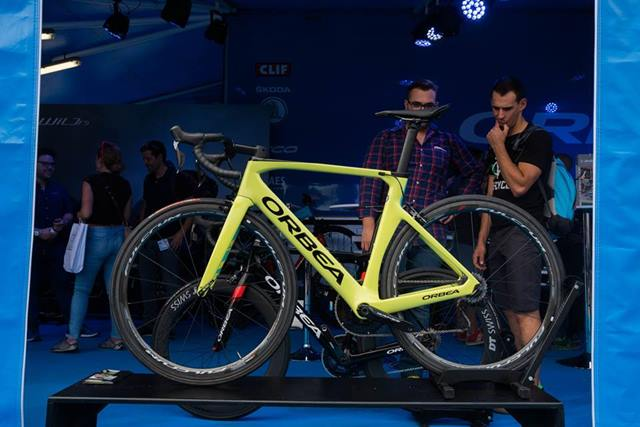

Día mundial de la Bicicleta
Banner conmemorativo
Lo único que está claro es que la bicicleta es un invento europeo. Dependiendo de lo que consideremos una bicicleta existen unas fechas u otras, siendo la primera bicicleta a pedales patentada como tal y a partir de la cual ha evolucionado la industria en el siglo XX la del británico John Kemp Starley en 1885, si bien es cierto que se basó en los modelos europeos construidos a lo largo de todo el siglo XIX. Existe la creencia de que Leonardo Da Vinci creó el primer boceto en papel de una bicicleta (¡que incluía hasta la cadena de transmisión!) a finales del siglo XV, pero el investigador alemán Hans-Erhard Lessing demostró en 1997 que el diseño se introdujo en los documentos de Leonardo a partir de 1961. También a finales del siglo XVIII, un francés, el conde de Sivrac habría inventado el celerífero, un primitivo cuadro sobre dos ruedas con una cabeza de animal, pero autores como Max Rauck, Gerd Volke y Felix Paturi han desmentido esta fecha atribuyéndola a antiguas rivalidades nacionalistas entre franceses y alemanes.

Hoy en día el uso de la bicicleta va más allá del deporte o de la diversión. Ante lo caótico que se ha convertido transitar por todo el mundo, cada vez son más las personas que la utilizan como medio de transporte.
Se estima que alrededor del 5 por ciento de la población en la capital ocupa la bicicleta para llegar a la escuela o al trabajo, lo que agiliza su tiempo de traslado, pero sobre todo ayuda a darle un respiro al medio ambiente.
Y es que, de acuerdo con las autoridades de la Secretaría del Medio Ambiente de la CDMX, en promedio 5.5 millones de vehículos circulan diariamente en esta urbe, los cuales son los principales generadores de la contaminación atmosférica.
Durante este año y debido a la mala calidad del aire en la zona metropolitana, en ocho ocasiones se activó la Fase 1 de Contingencia Ambiental y en dos más hubo precontingencia.
Las bicicletas de montaña (también conocidas como MTB) están diseñadas para “fuera de ruta” por lo que son bastante resistentes. Están equipadas con llantas anchas con dibujos marcados para mejorar el agarre en terrenos sueltos. Regularmente usan manubrios rectos o de doble altura. Las MTB se pueden encontrar sin suspensión (rígidas), con suspensión delantera (hardtail) o con doble suspensión (full-suspension) dependiendo de su especialidad: Cross country Enduro .
Son bicicletas orientadas a obtener velocidad en pavimento, de construcción más ligera que otras bicicleta, están dotadas con ruedas más grandes, delgadas y provistas de llantas angostas y con dibujo liso. Las bicis de ruta utilizan manubrios drop-bar para lograr una postura más aerodinámica.
Las bicicletas híbridas son bastante versátiles ya que combinan características de las bicis de montaña y de las de ruta.Estas bicicletas nacieron como una solución para quienes necesitan una bicicleta para la ciudad, pero que tenga la flexibilidad de ser usada en diferentes terrenos. Los cuadros son resistentes y con una geometría que permite adoptar una posición cómoda que permite relajar los brazos y el cuello.
En este caso nos referimos como bicicleta urbana a las bicis estilo holandés (Dutch).
Estas bicicletas fueron concebidas para la ciudad, por lo que son de construcción bastante solida tanto en su cuadro como en sus ruedas. Están perfectamente adecuadas para soportar las condiciones de una ciudad (baches, banquetas, topes, etc.)
La gran mayoría de estas bicicletas usan ruedas pequeñas, siendo 16 y 20″ las más comunes, aunque es posible encontrar plegables con rodados más convencionales. Casi todas las plegables están diseñadas para uso urbano, no obstante existen modelos que aguantan viajes largos sin problemas.
Si bien su conceptp es el de ser una bicicleta sencilla, se han convertido en algo así como las bicicletas de culto para el ciclismo urbano. Su principal característica es su diseño simple y en muchos casos minimalista, sumamente eficientes y funcionales.
Este tipo de bicicletas están diseñadas para trayectos cortos y sobre pavimento preferencialmente. Su geometría y manubrio característico permiten una postura sumamente relajada.
En la actualidad se puede encontar versiones de pedaleo asistido (eléctricas) de casi cualquier tipo de bicicleta. Las bicicletas eléctricas son todas aquellas bicis que utilizan un motor para asistir el pedaleo.
Scott
La marca Suiza sigue creciendo y parece dispuesta a seguir el camino de Specialized ampliando su cartera de productos a prácticamente todo el sector ciclista. Scott ya fábrica a día de hoy, además de bicicletas, cascos, zapatillas, gafas y ropa entre otros complementos, consiguiendo así fidelizar gran parte de sus clientes.Scott plasma: una de las mejores bicicletas para triatlón.La espectacularidad de sus diseñoses otro punto fuerte de la marca, especialmente en carretera, donde los acabados de algunos
Trek
En tercera posición encontramos al gigante norteamericano Trek, todo un referente a nivel de ventas mundiales con muchos años a la estela de Specialized.

Giant
En cuarta posición tenemos al mayor fabricante de bicicletas del mundo (fabrica también para terceros). La empresa con sede en Taiwan es un referente en cuanto a comodidad. Sus bicicletas son tremendamente cómodas y pese a que sus diseños y geometrías no han sido, hasta el momento, demasiado agresivas, siguen gustando a un público más clásico. Giant ha sido pionero en el mundo ciclista, por ejemplo inventando la primera bicicleta de carretera con sloping bajo

Canyon
La quinta posición está ocupada por un “rara avis” del sector. Canyon es la única marca de bicicletas que solo vende por internet y que no ofrece sus bicicletas en tienda física. Pese a contar, a priori, con este “hándicap” la marca es conocida por prácticamente todos los ciclistas de carretera y la enorme calidad de sus productos goza de una muy buena consideración entre los aficionados y profesionales del sector.

Cannondale
Sexta posición para un clásico cómo Cannondale que tiene en sus puntos fuertes la comodidad y calidad de los materiales de sus cuadros. Además su buen sistema de garantía post venta es también otro factor destacado de la corporación americana.

5.-Orbea
Primera y única marca española de la lista. Orbea ha sufrido importantes cambios en los últimos años que la han llevado a subir muchas posiciones en el ranking y lo cierto es que auguramos un gran futuro para la marca vizcaína.

Para mas información presiona aqui.

Para mas información presiona aqui.


 1
1 2
2 3
3 4
4 5
5 6
6 7
7 8
8